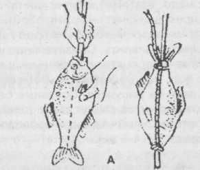
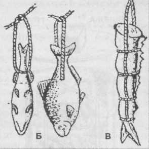
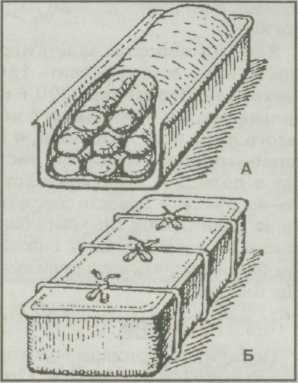
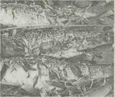
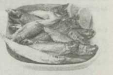
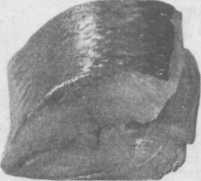
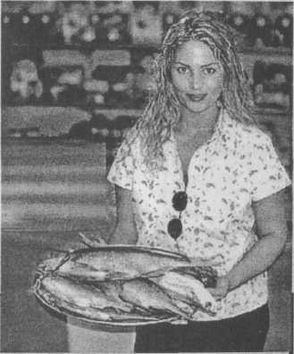
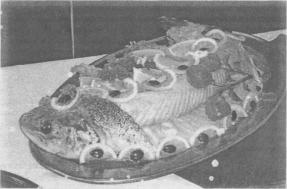

Рыбные заготовки впрок
 Хороша копченая мойва!
Хороша копченая мойва!
Приехали к вам гости, а на столе стоит блюдо с насыпанными горкой еще теплыми золотисто-желтыми рыбешками. А аромат, а вкус — никакие шашлыки сравниться не смогут. Мойва, конечно же, только как прекрасный пример — закоптить можно любую рыбу, а также ломтики мяса, птицу, сосиски и даже колбасу. В любом случае коптильня на участке поможет вам разнообразить меню, придать ему чуть больше пикантности.
Традиционные технологии копчения рыбы — холодная и горячая, но опытные туристы широко пользуются и полугорячей.
О древесинеЛучшие дрова для копчения — ольха и можжевельник. При заготовке последнего обламывайте аккуратно лишь сухие веточки, к тому же сырые все равно не годятся. Достаточно всего несколько веточек этого замечательного растения,чтобы придать рыбе и золотистый цвет, и неповторимый аромат.
Если нет ольхи, можно использовать сухую древесину любых твердых пород: дуба, орешника, ясеня, клена, яблони, груши, вишни, сливы; с березы обязательно надо снять кору — в ней содержится деготь. Ни в коем случае нельзя применять сосну, ель, кедр — в них много смолы. Древесину надо обязательно нарубить на небольшие чурочки или щепки по 4-6 см. При копчении можно использовать и опилки. Чурочки, ветки и опилки насыпают на дно бочки ровным слоем. Они начнут тлеть и выделять дым, как только прокалится днище бочки или ведра от костра, разведенного внизу.
Несколько слов о самом костре. При копчении рыбы он должен быть небольшим, но давать много жару — дрова можно выбирать любые. Поддерживать ровно горящий костер длительное время — искусство, которое приобретается только собственным опытом. Но от этого опыта зависит качество приготовленной копченой рыбы.
Горячее копчениеЭтот способ имеет много преимуществ. Он быстрый, надежный, простой; рыба сразу готова к употреблению. И сооружений сложных не надо. Есть металлическая бочка — прекрасно, нет — можно обойтись старым ведром, только их надо тщательно прокалить. Обязательное условие — хорошо подогнанные крышки. Как использовать эти емкости — ясно из рисунков. Вставные сетки, на которые кладут рыбу, делают из отожженной стальной проволоки диаметром 4-6 мм.
• В бочке можно расположить • Вставка для рыбы из отожженной стальной
рыбу на 3-4 сетках. проволоки. Диаметр проволоки несущей
конструкции — 4-6 мм, сетки -до 1,5 мм.
Так устанавливают ведро над костром.
Итак, если собрались коптить горячим способом, мелкую рыбу не разделывают, среднюю потрошат, крупную разделывают на пласт или боковник — разделка вдоль позвоночника на два филе. Разделанную рыбу моют и солят сухим способом. Для этого понадобится доска или кусок фанеры, соль крупного помола. Посыпав солью доску и рыбу, втирают соль в тушку, двигая ею по столу с небольшим нажимом.
Внутреннюю поверхность брюшка натирают солью вручную. Если рыба с толстой спинкой, делают в ней разрез вдоль хребта, втирают и туда соль.
Посол жирной рыбы (мойвы, скумбрии, палтуса, ставриды, зубатки, камбалы, толстолобика, сома, налима) несколько отличается от вышеописанного. Каждую рыбину, натертую крупной солью, заворачивают в пергамент или кальку, чтобы не окислялись жиры. Затем рыбу послойно укладывают в эмалированную посуду, лучше в лотки с крышкой. Сверху все укрывают пергаментом, а края его подгибают. Желательно уложить рыбу небольшой горкой, а крышкой придавить, зафиксировав веревкой или проволокой.
Засолка размороженной в холодной воде рыбы длится несколько дольше, чем свежей, — от 4-6 часов до суток.
Под действием соли происходит свертывание белков, теряются вкус и запах сырой рыбы, мясо ее уплотняется и становится пригодным в пищу без дальнейшей кулинарной обработки.
Следующая операция — провяливание рыбы в течение 40-60 мин. За это время ее соленость достигает требуемых 1,5-2%, и рыба частично обезвоживается, так как стекает тузлук — раствор соли. Рыбу обвязывают бечевой, развешивают на вешалах и прикрывают от мух марлевым пологом.
Теперь можно коптить рыбу. На дно ведра или бочки загружают смесь ольховых или других чурочек с добавкой можжевельника, а на решетках из металлической проволоки в средней и верхней частях емкости размещают рыбу, более крупную — внизу. Ее укладывают неплотно в один слой. Обвязку, выполненную суровым шпагатом (синтетику не применять!), не снимают. Под бочкой разводят костер и по возможности плотно закрывают ее крышкой или металлическим листом. Через 30-60 мин. (в зависимости от размера рыбы и коптильни) дым из-под крышки становится сухим и приобретает характерный аромат. Окончательно готовность определяют по внешнему виду рыбы: золотисто-чайному цвету и сухой поверхности шкурки. При этом коптильню можно открывать лишь на очень короткое время, чтобы не воспламенились чурки из-за доступа воздуха.


• Варианты обвязки рыбы для горячего копчения : А — со вставной шпонкой, Б — прошивка, В — обвязка. При холодном — рыбу просто подвешивают.
Температура внутри бочки около 80 град, при подсушке, которая составляет примерно четверть времени, и около 100 град, при непосредственном копчении. В результате этого процесса происходит свертывание белков, разрушение малостойких органических соединений, теряется часть азотистых веществ вместе с влагой, вытапливается жир.
Определить температуру просто — достаточно плеснуть на крышку воду, если вода не кипит, а просто испаряется, — режим копчения выдерживается правильно.
Готовое блюдо не может храниться долго, его надо съесть за 2-3-е суток.
• Холодная коптильня, но 100 x 100 или 1 50 х 150 мм. Сверху ее закрывают доской и дерном. Внизу — ямка для костра. Сверху — ящик для копчения.
Холодное копчениеЭтот способ более трудоемкий. Надо сооружать специальную коптильню, дольше просаливать рыбу, и сам процесс занимает от 2-х до 3-х суток.
Устройство простейшей коптильни ясно из рисунка. Оптимальная длина наклонного дымохода должна быть не менее 7-10 м. Если на участке есть погреб, можно использовать его, нет — придется устроить искусственную насыпь.
Свежую рыбу солят в течение 5-ти суток, размороженную — вдвое дольше. Причем рыбу, уложенную в лотки, дополнительно посыпают солью. Дольше длится и отмочка — 4-6 и более часов. После этого рыбу обвязывают и провяливают в течение суток. Температура дыма в коптильне должна быть не более 35 град. После копчения рыбу можно подвялить в течение суток — это увеличит срок хранения.
При холодном копчении рыба теряет значительную часть влаги и пропитывается, как бы консервируется дымом от костра. И еще одно дополнение: чем больше соли в рыбе, тем ниже должна быть температура.
• Печь — буржуйка для полугорячего копчения.
Полугорячее копчениеДля него годится рыба со сроком засолки более суток, отмочка может быть проведена «на глазок». В качестве коптильни используют обычную железную печку «буржуйку» с парой дополнительных колен на трубе, чтобы температура дыма была 50-60 град. Поддувало прикрывают для обеспечения тления в топке, а рыбу развешивают в некотором удалении от среза трубы в зоне смешивания дыма с воздухом. Для копчения достаточно одного светового дня. Вкус рыбы несколько необычный, а внешний вид и аромат ближе к горячему копчению. Эта технология в настоящее время широкого распространения не получила, но интересна по своей простоте и большим возможностям для экспериментирования.
Анатолий БОГАЧ, г.Жодино.
«Рыбьи бусы»Мама рассказывала об использовании рыбы, лучшее душком, в саду. Во время цветения вишни подвесить рыбину в крону для привлечения мух, заодно они и на цветочки садятся, опыляют.
Юлия ГАВРИЛОВА, г.Псков.
Соленая горбушаС тушки свежемороженой горбуши срезать хвост и плавники, отрезать голову. Затем разрезать по спинке вдоль и удалить хребтовую кость. Обрезь можно использовать для ухи, а полученное филе обсыпать смесью соли с сахаром (1 ч.л. сахара и 2 ст.л. соли), выложить на длинное блюдо сначала одну филейку кожицей вверх, на нее — вторую, тоже кожицей вверх. Сверху положить груз (очень удобно — двухлитровую пластмассовую бутылку, наполненную водой). Выдержать горбушу в холодильнике сутки, затем развесить, зацепив крючками, над плитой или батареей. Немного подсушив, выложить на блюдо, посыпать зеленью.
Наталья ЛНИСКЕВИЧ, г.Жодино.

• Эмалированный лоток для засолки рыбы: А — укладка рыбы в пергаменте, Б — обвязка.
Рыбные консервыДля изготовления консервов рыбу можно брать и свежую, и мороженую.
Рыба, приготовленная по этому нетрудоемкому рецепту, хранится несколько месяцев.
Рыбу хорошо промыть, внутренности удалить. В кипящий рассол из 1 л воды и 40 г соли опустить на 1 мин. рыбу. Затем положить ее на 2 мин. в раствор 9%-ного уксуса. Приготовить концентрированный раствор соли: в горячей воде растворить такое количество соли, пока часть ее уже не будет растворяться. Выдержать в остывшем соленом растворе рыбу полчаса, затем повесить в проветриваемом помещении. На рыбе при подсыхании появится тонкий слой соли.
В томатеРыбу выпотрошить, промыть и, посолив (на 1 кг рыбы — 1 ст.л. соли), выдержать полчаса. Затем обвалять рыбу в муке и хорошо обжарить в растительном масле. Сложить в стерилизованные литровые банки.
2 кг помидоров проварить и протереть через сито. Добавить 150 г растительного масла, 300 г измельченного и обжаренного репчатого лука, 4 шт. гвоздики, 4 горошины перца, 4 лавровых листа, 1 ст.л. соли, 5 ст.л. сахара и 3 ст.л. 9%-ного уксуса. Довести соус до кипения, залить рыбу. Прикрыть банки крышками, стерилизовать 1 час. Затем банки закатать и стерилизовать еще 6 часов.
ХекПосолить выпотрошенную и промытую рыбу (на 1 кг рыбы — 1 ст.л. соли) и оставить на 40 мин. В простерилизованную литровую банку положить 1 лавровый лист, 3 горошины перца, 3 гвоздики. Потом уложить рядами нарезанную ломтиками рыбу, пересыпая каждый ряд кольцами лука. Выдавить в банку сок половины лимона.Можно вместо лимонного сока сбрызнуть рыбу уксусом. Прикрыть крышкой и пастеризовать 70 мин, слить половину жидкости, добавить прокаленное растительное масло и снова прогревать 30 мин. Закатать и стерилизовать 7 часов.
Таким же образом можно законсервировать ставриду, но стерилизовать закатанные банки 8 часов. А скумбрию — 9-10 часов.
СардиныРыбу очистить, отрезать голову, хвост, плавники, хорошо вымыть и дать стечь воде. Посолить по вкусу и оставить на 40 мин. Выложить в металлическое сито, в нем опустить в кипящее растительное масло и обжаривать 2 мин. Остудить, разложить в литровые банки с пряностями (1 лавровый лист, 3-5 горошин черного перца). Залить тем маслом, в котором жарились сардины. Накрыть крышкой, не закатывая, и пастеризовать 45 мин., затем закатать и стерилизовать 1 час. Стерилизацию повторить 3 раза через сутки каждый раз. Причем, банки из кастрюли не вынимать и крышку не открывать.
Игорь ЗАЙЦЕВ, г.Александровск.
* * *
Выбрать мелкие сардины, удалить чешую, промыть в холодной воде. Острым ножом разрезать брюшко, удалить внутренности, отрезать голову и плавники, промыть в холодной воде и отцедить воду. Сложить рыбу в металлическое сито и в нем же опустить в кипящее на огне растительное масло. Жарить 1-2 мин. Дать остыть. В простерилизованные банки положить 1 -2 ломтика лимона, по 2 горошины черного перца, соль; затем выложить рыбу, сверху залить растительным маслом, в котором сардины жарились, банки герметически укупорить и стерилизовать их в кипятке в течение 50-60 мин.
Лидия СТАРКОВА, г.Краснодар.
Консервы из карпаСвежего карпа очистить от внутренностей, чешуи, плавников и удалить голову. Промыть проточной водой, нарезать небольшими кусочками, как для жаренья, посолить, добавить пряности (молотые семена укропа, кориандр, черный перец). На дно литровой банки положить 1 дольку чеснока, влить 1 ст.л. растительного масла. Плотно до плечиков банки уложить кусочки рыбы, наверх положить лук, нарезанный колечками, накрыть крышками и стерилизовать на медленном огне 10 часов до тех пор, пока косточки не станут мягкими. Затем банки закатать, хранить консервы в холодном месте.
Александра МАЛЬКО, д.Мозоли Минской обл.
• Передтем, как чистить рыбу, ее рекомендуют подержать часа два в холодной воде с уксусом. Если такой возможности нет, ошпарьте рыбу кипятком непосредственно перед чисткой. Чешуя снимется гораздо легче.
• Чтобыизбавиться от сильного специфического запаха при варке или тушении рыбы, добавьте в кастрюлю немного молока, как это принято у народов Севера. Запах исчезнет, а рыба станет нежнее и приятнее на вкус
И в огороде рыбка пригодится…Когда в Северной Америке индейцы перестали каждый год кочевать на новое место, они начали понимать, что земля истощается. И стали использовать природные удобрения. Во время просмотра телепередачи об Америке я видел, как один индеец садил кукурузу — делал ямку в земле, бросал в нее зерно и кусочек рыбы для удобрения.
Попробовал применить этот метод у себя на даче под помидоры, огурцы и цветы — результат превосходный. Правда, рыба для нас удобрение весьма дорогостоящее, поэтому я в землю закапывал рыбьи головы, кости, чешую.
Иван МЕДЯНИК, г.Бобруйск.
Рыбные консервы в маслеПригодна любая речная рыба. Очистить, выпотрошить, отрезать головы и хвосты. У рыбы с жесткими плавниками (окунь, ерш) их обрезать, а мягкие можно не обрезать. Крупную рыбу нарезать ломтиками, а мелкую оставить тушками. Посолить по вкусу. Консервы готовить в скороварке, закладывая по 1-1,5 кг рыбы. На решетчатую подставку скороварки насыпать мелко нарезанный лук, 3-4 горошины черного перца, лавровый лист. На них уложить тушки и ломтики рыбы, а сверху еще посыпать луком. Влить 100 г растительного масла и 800 г воды. Закрыть скороварку и поставить на сильный огонь. Как только из рабочего клапана начнет выходить пар, уменьшить до минимума пламя и засечь время. Через 1,5 часа консервы готовы. Все кости становятся мягкими, как в консервах заводского изготовления.
Заранее простерилизовать банки и металлические крышки. Горячие ломтики рыбы, лук, пряности переложить в банки, залить заливкой из скороварки, накрыть металлическими крышками и поставить в кастрюлю с кипящей водой на 5-8 мин., после чего крышки закатать.
Светлана ШУМАК, п/о Ляховичи Брестской обл.
* * *
1 кг рыбы, по 700 г моркови и репчатого лука, соль, перец горошком.
Речную рыбу вымыть, выпотрошить, очистить, отрезать головы, плавники и хвосты. Нарезать ломтиками, сложить в эмалированную емкость и, хорошо посолив, выдержать 1 час. Затем вынуть рыбу из образовавшегося рассола, перемешать с натертой на крупной терке морковью и нарезанным кольцами луком, добавить перец горошком.
В поллитровые банки влить по 3 ст.л. растительного масла и заполнить рыбой. Банки не должны быть заполнены слишком плотно, иначе при кипении жидкость будет выливаться. Банки прикрыть старыми (без резинок) жестяными крышками, поставить в холодную духовку, нагреть до 200 град, и тушить 4-5 часов. Затем консервы закатать, перевернуть, укутать. Хранить в погребе.
Наталья КАЛОША, д. Нижний Теребежов Брестской обл.

«Шпроты»
1,2 кг кильки или сайки, 200 г растительного масла, 1 ст.л. (без верха) соли, 1 ст. крепкой чайной заварки, перец горошком.
Рыбу вымыть, выпотрошить (у сайки удалить головы). Сложить в кастрюлю из нержавеющей стали, посыпать солью, залить заварку и растительное масло, всыпать перец. Тушить на медленном огне 2,5-3 часа. Затем снять крышку и тушить еще 25-30 мин., чтобы испарилась лишняя жидкость. Разложить рыбу в стерилизованные поллитровые банки, стерилизовать 10-15 мин. Закатать.
Ольга МАЛИЦКАЯ, г. Тула.
* * *
1 кг мойвы вымыть, выпотрошить. Перемешать с 1 ст.л. соли и выдержать 5-6 часов. Затем промыть рыбу от оставшейся на поверхности соли, смазать растительным маслом, выложить на решетку и поставить в коптильню для горячего копчения. Когда рыба закоптится до золотистого цвета, остудить, сложить слоями в стерилизованные 700-граммовые банки. Предварительно на дно банок положить по 2 лавровых листа, 2 шт. гвоздики, 5-6 горошин перца. Очень осторожно залить рыбу в банках кипящим растительным маслом, прикрыть стерилизованными металлическими крышками и стерилизовать 1,5 часа. После этого влить в банку 1 ст.л. 9%-ного уксуса и закатать. Перевернуть, укутать до полного остывания.
Таким же образом можно заготовить рыбу в масле или томате. Но коптить не нужно, а, просолив, обжарить либо в растительном масле, либо в сливочном, добавив томатную пасту. Затем сложить в поллитровые банки с пряностями, залить кипящим маслом, простерилизовать 1,5 часа, влить 3/4 ст.л. 9%-ного уксуса и закатать.
Наталья МАРЧЕНКО, ст.Исправная, Карачаево-Черкессия.
Консервированная рыба с овощамиРыба подойдет любая морская, но особенно вкусно (и к тому же совсем не дорого) получается килька или путасу.
5 кг очищенной от внутренностей и голов рыбы, 4 кг помидоров, 1 кг свеклы,

2 кг моркови, 1 кг лука, 1 кг сладкого перца, 1 л растительного масла, 15 ст. л. сахара, 4 ст. л. соли, 0,5 ст. 9%-ного уксуса, 1 л воды.
Помидоры пропустить через мясорубку, перемешать с рыбой (кильку взять с костями, а путасу 1 -2 мин. отварить, и филе очень легко отделится от костей) и тушить на маленьком огне час Натереть на крупной терке сырую свеклу и морковь, нарезать полукольцами лук и сладкий перец, все вместе обжарить в растительном масле.
Соединить помидоры с рыбой и пассерованными овощами, добавить соль, сахар, влить остаток растительного масла и воду. Все вместе тушить еще час, за 5 мин. до готовности влить уксус. Разложить салат в стерилизованные горячие банки, закатать и укутать на сутки. Хранить в прохладном месте.
Людмила ЯКУБОВИЧ г. Пинск.
Маринованная рыбаЭтим способом можно мариновать скумбрию, пеламиду, кефаль, лососину, семгу.
1 кг рыбы очистить от чешуи, слизи, внутренностей, отрезать голову. Нарезать кусочками, сложить в посуду, залить раствором: на 1 л воды — 1 л 9%-ного уксуса, 150 г соли. После того, как рыба полежит в растворе 1 — 2 дня, сложить ее в банку, залить уксусно-соленым раствором, в котором она мариновалась. Банку герметически закупорить и поставить в холодильник. Хранить можно до 4 месяцев.
Елена КУЗЬМИНА, г.Могилев.
Если в огороде завелся кротВообще-то крот полезен, так как поедает личинки хрущей и проволочников, медведок, совок. Кротовые ходы хорошо дренируют сырую почву. Но при этом разрывают грядки и подкапывают деревья, портят клумбы, дорожки.
Отпугнуть кротов поможет тухлая рыба, особенно селедка. Нужно положить тушку испорченной рыбы или влить селедочный рассол в норку вредителя и присыпать ход землей. Кроты очень не любят резких запахов и уйдут с участка.
«Домашняя газета».
Килька маринованнаяРазделать 500 г свежей кильки.
Приготовить горячий маринад из 1,5 ст. 3%-ного уксуса, соли, сахара, перца, лаврового листа — по вкусу.
Залить им рыбу, накрыть крышкой, укутать и выдержать до остывания. Затем маринад слить, снова подогреть и залить рыбу. Повторить так 3-4 раза.
Наталья ДОЛЬНИКОВА, г.Луганск.
Фрикадельки7 средних щук, 0,5 кг сала.
У свежих щук отделить мякоть от костей и кожи. Пропустить с салом через мясорубку (фарш делать, как на котлеты, но хлеб, яйцо не класть). Сформовать фрикадельки, обжарить в растительном масле, разложить в банки и залить подливой.
Банки прикрыть крышками и стерилизовать 2 часа на водяной бане. Закатать.
Подлива: 6 луковиц нарезать соломкой и обжарить в растительном масле до полуготовности, добавить 400 г томатной пасты, 1 л 125 мл воды, 30 г соли, 80 г сахара, лавровый лист, перец горошком, гвоздику, влить 190 г 6%-ного уксуса.
Выход — семь 750-граммовых банок.
Елена ГЕРАСИМОВА, п.г.т.Пойковский Тюменской обл.
Домашние «шпроты»1 кг свежемороженой мойвы, 1 ст. крепкой заварки черного крупнолистового чая, подсолнечное масло рафинированное, соль, перец — по вкусу.
Рыбу промыть, уложить в высокую сковороду «гармошечкой», посолить, поперчить и залить заваркой (вместе с листьями чая). Кипятить 1 час. Затем заварку слить, аккуратно
удалить листья чая, мойву уложить в широкую кастрюлю (банку, утятницу или др.) и залить маслом. Через сутки хранения в нижнем отделе холодильника «шпроты» готовы.
Олег АНОСОВ, г. Воронеж.
Домашние «консервы в томатном соусе»2 кг любой некрупной рыбы (караси, красноперка, окуньки), 1 ст. растительного масла, 1 ст. 6%-ного уксуса, 1 ст. томатной пасты, 0,5 ст. сахара, соль — по вкусу.
У рыбы удалить головы, тушки промыть, сложить в кастрюлю и залить смесью масла, уксуса, томатной пасты, сахара и соли. Накрыть крышкой и поставить на 3-3,5 часа в духовку. Еще лучше — в русскую печь.
«Консервы» получаются замечательные, вкуснее магазинных. Только не консервированные, а потому долго их хранить нельзя.
Нина МИЛЯЕВА, г. Кропоткин Краснодарского края.
Филе сельди в маринадеНа 0, 5 кг филе взять 1 ст. воды и добавить 50 г яблочного уксуса (можно 9%-ного спиртового), 10-12 горошин черного перца, 1 ст.л. сахара, 1,5 ст.л.соли, 2-3 лавровых листа и нарезанную кольцами 1 большую луковицу. В этой смеси замариновать сельдь и выдержать в холодильнике сутки.
Ирина ГАРАМЬЕВА, д.Столбун Гомельской обл.
Рыба кусочкамиРыбу выпотрошить и тщательно вымыть. Разрезать на порционные куски, посолить по вкусу и выдержать в кастрюле 2-3 часа. Затем сложить рыбу в поллитровые банки (до плечиков), добавить 2-3 горошины черного перца, 1-2 лавровых листа. Накрыть металлическими крышками и поставить в холодную духовку. Нагреть до 150 град. Когда

рыба закипит, температуру снизить до 100-50 град, и выдержать в духовке 1,5-2 часа. После этого, доставая по одной банке, долить доверху кипятком, закатать, перевернуть и поставить обратно в духовку до полного остывания.
Ольга ТЯГУНОВА, п. Рощи но Челябинской обл.
* * *
Практически любую рыбу можно мариновать в домашних условиях. Для маринада на 5 л воды понадобятся: 3 ст.л. сахара, 3 г душистого перца, 2 г гвоздики, 3 г кориандра, 100 г яблочного или 6%-ного уксуса и 1,5 ст.л. соли. Воду вместе с завязанными в марлевый узелок специями кипятить полчаса и остудить. Затем положить туда приготовленную рыбу и выдержать 3-4 часа, маринад отцедить, а рыбу уложить в банки. Добавить лавровый лист и вновь залить маринадом. Банки укупорить и хранить в прохладном месте.
Заготовленная таким образом маринованная рыба не теряет своих питательных свойств в течение 3-4 месяцев.
Елена ЗАБОЛОТЬКО, г.Ишим.
Рыба — от переломовХочу подсказать способ лечения переломов и быстрого сращивания костей, которым пользовались поморы. Они готовили для этого «холодец» из разных видов рыбы. Рыбу очистить только от внутренностей и удалить жабры, а вот чешую не снимать. Поморы варили «холодец» в глиняных горшках в печи по 5-7 часов и оставляли там до утра, и никогда не использовали для этой цели алюминиевую, медную или чугунную посуду.
В нынешних условиях лучше взять эмалированную кастрюлю, положить в нее рыбу и тушить, залив небольшим количеством воды, на малом огне, чтобы содержимое не кипело, а прело. Раствор должен получиться очень насыщенным, его-то и применяют как лекарство, кому как нравится — либо в жидком, либо в желеобразном виде. А способ приема поморы рекомендуют такой: стакан навара или студня ежедневно. Навар пьют горячим на голодный желудок небольшими глотками без хлеба. Студень же едят через час после завтрака.
Ксения НАУМОВА, г.Самара.
Рыба в маслеНа 10-литровое ведро речной рыбы — поллитровая банка соли, 0,5 л растительного масла, перец горошком, лавровый лист.
Рыбу не мыть, не потрошить, пересыпать солью, обильно полить маслом, добавить перец, лавровый лист, прижать гнетом, поставить в прохладное место. Рыба даст сок, и, когда спинка сузится, — рыба готова.
Лариса ФИЛИППОВА, с. Троицкое Воронежской обл.
Килечка «Для папы»500 г свежей кильки, 0,5 ст. яблочного уксуса, 1,5 головки чеснока, 1 пучок петрушки, 1 пучок кинзы, соль, перец, 1 ст. растительного масла, 1 ст. воды.
Рыбу почистить, удалить головы, промыть. Уксус смешать с водой и полить рыбу. Дать постоять 2 часа. Чеснок растереть с солью, зелень мелко нарезать и смешать с чесноком. С рыбы слить маринад, посыпать перцем,зеленью с чесноком и залить маслом. Дать постоять еще 3 часа.
Алла ВОЛКОВА, г.Рязань.
Маринованная рыба «Хе»Филе судака, щуки или красной рыбы обвалить в соли и выдержать 3-4 часа, затем рыбу промыть и нарезать мелкими кусочками. Развести 1 ст.л. уксусной эссенции в 1 ст. холодной кипяченой воды и залить кусочки рыбы. Дать настояться 6-7 часов, затем, чуть отжав, переложить в блюдо с пряностями (перец молотый, растертый чеснок, мелко нарезанный репчатый лук, измельченные укроп, петрушка) и залить подсолнечным маслом. Поставить на 2-3 часа в холодное место, чтобы рыба пропиталась.
Людмила ИРХИНА, г. Астрахань.
Вяленая скумбрияФиле скумбрии промыть, хорошо посолить и плотно сложить в эмалированную миску. Выдержать в холодильнике 3 дня. Соль смыть, а рыбу подвесить, подстелив бумагу для стекания жира, на 3 дня. Вкус у такой скумбрии, как у балыка.
Ирина ЛЕВА, п.Смоляниново Приморского края.

•Вяление. После засолки рыбу нужно ополоснуть чистой водой и поместить на 1 -2 мин. в слабосоленый раствор уксусной эссенции (на 10 л раствора 6 ст.л. эссенции). Это нужно сделать для того, чтобы при вялении на рыбу не садились мухи и не откладывали яйца. Затем рыбу вывесить на хорошо проветриваемое и освещенное место. Для провяливания потребуется от 3 до 10 дней. На ночь рыбу желательно убирать или чем-нибудь накрывать, т.к. при перепаде температур она увлажняется и теряет свои вкусовые качества. Для вяления годятся все виды рыб, кроме налима, сома.
•Вяленая рыба будет вкуснее, приобретет приятный аромат и янтарный цвет, если ее прокоптить после вяления в течение 2-3 часов. Для этого по ветру развести небольшой дымокур из чурок лиственных пород: осины, липы, тополя.
•Крупн ы eкуски рыбы (более 500 г) следует класть для варки в холодную воду, а мелкую рыбу — в кипящую.
Рыба по-дальневосточномуМожно готовить из горбуши, карпа, скумбрии.
Рыбу хорошо вычистить, вымыть, обтереть насухо. На 2 кг рыбы приготовить смесь из 5 ст.л. (без верха) соли, 2 ст.л. сахара, по желанию можно добавить черный молотый перец. На чистой тканевой салфетке разложить разрезанную вдоль рыбу, натереть ее со всех сторон готовой смесью, завернуть и оставить при комнатной температуре на 2-е суток, затем убрать в холодильник. Такая рыба получается малосоленой.
Лидия СУХИХ, п. Троицкий Белгородской обл.
